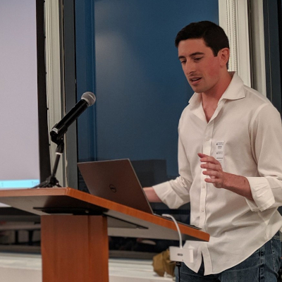

Jack O'Connor
oconnor663@gmail.com
GitHub
YouTube
Stack Overflow
Keybase (keybase.txt)
videos
Rust can Compete with Python - considering Rust when speed doesn't matter
A First Look at Lifetimes in Rust
Unsafe Rust is not C - a look at tricky pointer aliasing rules in both languages
A Firehose of Rust - for busy people who know some C++
articles
[rough draft] Async Rust in Three Parts
Object Soup is Made of Indexes - how to do shared, mutable objects the Rust way
Safety and Soundness in Rust
projects
the SHA-256 Project - from teaching Applied Cryptography at NYU Tandon
BLAKE3 - a general-purpose cryptographic hash function, fast everywhere
Bao - a verified streaming tool based on BLAKE3
blake2_simd - a Rust implementation of BLAKE2b/s/bp/sp
peru - a build tool that fetches other people's code in a reproducible way
duct.py - a Python library for running child processes
duct.rs - a Rust version of the same
os_pipe.rs
- a Rust library for opening OS pipes
shared_child.rs
- a Rust library for managing child processes from multiple threads